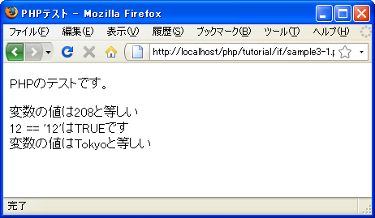
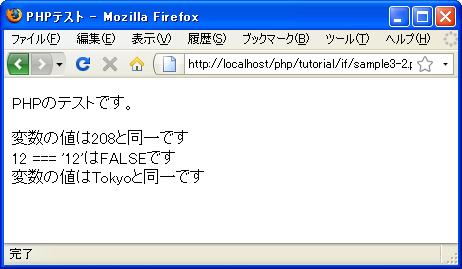
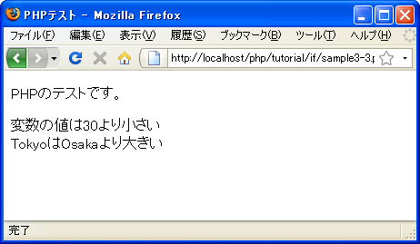

比較演算子
if文などの条件分岐の時には条件式の内容が真か偽かによって処理を分けます。条件式には「xxxと等しい」とか「xxxよりも大きい」などのように条件を記述することになりますが、この条件式の中で使用されるのが比較演算子(関係演算子とも言います)です。
まずはPHPで用意されている比較演算子の種類を確認します。
| 演算子 | 記述例 | 意味 |
|---|---|---|
| == | a == b | bとaの値が等しい |
| === | a === b | bとaの値が等しく型も等しい |
| != | a != b | bとaの値が等しくない |
| <> | a <> b | bとaの値が等しくない |
| !== | a !== b | bとaの値または型が等しくない |
| > | a > b | bよりaが大きい |
| >= | a >= b | bよりaが大きいか等しい |
| < | a < b | bよりaが小さい |
| <= | a <= b | bよりaが小さいか等しい |
比較演算子は左辺と右辺に指定した数値や文字列を比較し等しいか等しく無いか、また大きいか小さいかなどを比較します。そして真となった場合にはTRUE、偽となった場合にはFALSEを返します。
ではいくつかの演算子を実際に試してみます。
※演算子に関する優先順位は「演算子の優先順位」を参照して下さい。
値が等しいかどうか
値の比較を行うには「==」演算子を使用します。
$num = 20;
if ($num == 20){
print "変数numの値は 20 と等しい";
}
演算子の右辺と左辺の値を比較して等しければTRUEを返します。
比較演算子の右辺と左辺のデータ型が異なっていても比較は行われます。この時、自動的に型の変換が行われます。例えば数値の5と文字列の「5」を比較した場合、文字列は数値に変換されて数値として比較されます。結果的にこの比較はTRUEとなります。数字ではない文字列と比較する場合は相手が数値であれ文字列であれそれぞれの値を辞書順で1文字ずつ比較します。
特殊な例ですが、数値の2と文字列の「2」を比較する場合は数値として比較されるので等しくなります。文字列の比較には「==」演算子を使う代わりに「strcmp」関数を使って比較するとこともできます。
なお値が等しくないかどうかを判別するには「!=」演算子または「<>」演算子を使います。この場合は値が等しくない場合にTRUEを返します。
サンプルプログラム
では簡単なプログラムで試して見ます。
<!DOCTYPE html PUBLIC "-//W3C//DTD XHTML 1.0 Transitional//EN"
"http://www.w3.org/TR/xhtml1/DTD/xhtml1-transitional.dtd">
<html xmlns="http://www.w3.org/1999/xhtml" xml:lang="ja" lang="ja">
<head>
<meta http-equiv="Content-Type" content="text/html;charset=UTF-8" />
<title>PHPテスト</title>
</head>
<body>
<p>PHPのテストです。</p>
<p>
<?php
$var1 = 208;
if ($var1 == 208){
print "変数の値は208と等しい<br />";
}
$var1 = 12;
$var2 = '12';
if ($var1 == $var2){
print "12 == '12'はTRUEです<br />";
}
$var1 = 'Tokyo';
if ($var1 == 'Tokyo'){
print "変数の値はTokyoと等しい";
}
?>
</p>
</body>
</html>
上記のファイルをWWWサーバのドキュメントルート以下に設置しブラウザからアクセスすると次のように表示されます。

今回の比較演算子は全てTRUEを返すことが確認できます。
値と型が等しいかどうか
「==」演算子の場合は値が等しいかどうかをだけを判別するため数値と文字列の比較であっても等しくなる場合があります。そこで型が等しいかも含めて比較を行うには「===」演算子を使用します。
$num = 20;
if ($num === 20){
print "変数numの値は 20 と等しい";
}
演算子の右辺と左辺を比較して型と値が等しければTRUEを返します。上記の場合は型も値も一致しているのでTRUEを返します。
「===」演算子の場合は右辺と左辺のデータ型が異なっている場合に型変換は行われません。次の例を見てください。
$num = 20;
if ($num === "20"){
print "変数numの値は 文字列の20 と同一";
}
今度の場合は型が異なっているためFALSEを返します。
なお値か型が等しくないかどうかを判別するには「!==」演算子を使います。この場合は値か型が等しくない場合にTRUEを返します。
サンプルプログラム
では簡単なプログラムで試して見ます。
<!DOCTYPE html PUBLIC "-//W3C//DTD XHTML 1.0 Transitional//EN"
"http://www.w3.org/TR/xhtml1/DTD/xhtml1-transitional.dtd">
<html xmlns="http://www.w3.org/1999/xhtml" xml:lang="ja" lang="ja">
<head>
<meta http-equiv="Content-Type" content="text/html;charset=UTF-8" />
<title>PHPテスト</title>
</head>
<body>
<p>PHPのテストです。</p>
<p>
<?php
$var1 = 208;
if ($var1 === 208){
print "変数の値は208と同一です<br />";
}
$var1 = 12;
$var2 = '12';
if ($var1 === $var2){
print "12 === '12'はTRUEです<br />";
}else{
print "12 === '12'はFALSEです<br />";
}
$var1 = 'Tokyo';
if ($var1 === 'Tokyo'){
print "変数の値はTokyoと同一です";
}
?>
</p>
</body>
</html>
上記のファイルをWWWサーバのドキュメントルート以下に設置しブラウザからアクセスすると次のように表示されます。

値が等しくても型が異なる場合はFALSEを返すことが確認できます。
大小の比較
2つの値を比較して大きいか小さいかを判別するには「<」「<=」「>」「>=」演算子を使います。
$num = 20;
if ($num > 10){
print "変数numの値は 10 よりも大きい";
}
if ($num <= 30){
print "変数numの値は 30以下である";
}
演算子の右辺と左辺を使用している演算子によって大小を比較し、真であればTRUEを返し偽でればFALSEを返します。上記の場合はどちらの条件式もTRUEを返します。
なお文字列の値の大小を比較した場合は先頭の文字から辞書順で比較します。
サンプルプログラム
では簡単なプログラムで試して見ます。
<!DOCTYPE html PUBLIC "-//W3C//DTD XHTML 1.0 Transitional//EN"
"http://www.w3.org/TR/xhtml1/DTD/xhtml1-transitional.dtd">
<html xmlns="http://www.w3.org/1999/xhtml" xml:lang="ja" lang="ja">
<head>
<meta http-equiv="Content-Type" content="text/html;charset=UTF-8" />
<title>PHPテスト</title>
</head>
<body>
<p>PHPのテストです。</p>
<p>
<?php
$var1 = 21;
if ($var1 < 30){
print "変数の値は30より小さい<br />";
}
$var1 = 'Tokyo';
$var2 = 'Osaka';
if ($var1 > $var2){
print "TokyoはOsakaより大きい";
}else{
print "TokyoはOsakaより小さい";
}
?>
</p>
</body>
</html>
上記のファイルをWWWサーバのドキュメントルート以下に設置しブラウザからアクセスすると次のように表示されます。

( Written by Tatsuo Ikura )

著者 / TATSUO IKURA
初心者～中級者の方を対象としたプログラミング方法や開発環境の構築の解説を行うサイトの運営を行っています。